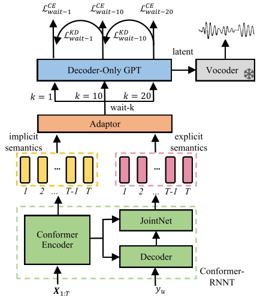

Abstract
Dysarthric speech reconstruction (DSR) typically employs a cascaded system that combines automatic speech recognition (ASR) and sentence-level text-to-speech (TTS) to convert dysarthric speech into speech with normal prosody. Dysarthric patients speak more slowly, leading to an excessively long response time in such systems, making them unacceptable in long-speech scenarios. Cascaded DSR systems based on streaming ASR and incremental TTS can reduce these delays. However, patients with varying degrees of dysarthria exhibit significant pronunciation differences for the same text, resulting in poor robustness of ASR and limiting the intelligibility of reconstructed speech. In addition, incremental TTS suffers from poor prosodic feature prediction due to a limited receptive field. In this study, we propose an end-to-end simultaneous DSR system with two key innovations: 1) A frame-level adaptor module is introduced to bridge ASR and TTS. By employing explicit-implicit semantic information fusion and joint module training, it enhances the error tolerance of TTS to ASR outputs. 2) A multiple wait-k autoregressive TTS module is designed to mitigate prosodic degradation via multi-view knowledge distillation. Our system has an average response time of 1.03 seconds on Tesla A100, with an average RTF of 0.71. On UASpeech, it achieves 4.67 MOS, showing a 23.51% relative improvement in WER compared to the SOTA.
Diagram of Model

Chinese commercial Test Set
intelligibility-low
| Sample | Original | ASR-TTS(E2) | Conformer RNNT(pinyin) | E2E-SDSR wait-1(E7) | E2E-SDSR wait-10(E10) | E2E-SDSR wait-20(E8) | Label |
|---|---|---|---|---|---|---|---|
| 178_M_1 | n i d e q ue x ian sh i sh en m e | 你的缺点是什么 | |||||
| 178_M_2 | w o x ian ch i f an l e | 我先吃饭了 | |||||
| 106_W_1 | t a h ua b an j iu x iang w o m en d e sh ou | 它花瓣就像我们的手 | |||||
| 106_W_2 | j iu d iao zh e x ie b u y in r en zh u m u d e j iao g uan | 揪掉这些不引人注目的小花 |
intelligibility-middle
| Sample | Original | ASR-TTS(E2) | Conformer RNNT(pinyin) | E2E-SDSR wait-1(E7) | E2E-SDSR wait-10(E10) | E2E-SDSR wait-20(E8) | Label |
|---|---|---|---|---|---|---|---|
| 20_M_1 | sh eng h uo h en p in d an y ou h en n an | 生活很平淡又很难 | |||||
| 20_M_2 | y i g e r en zh u d uo j iu l e k en d ing h ui l ei l e | 一个人主动久了肯定会累了 | |||||
| 39_W_1 | x ian z ai b u sh i sh uo ch i y i a | 现在不是双十一啊 | |||||
| 39_W_2 | k an l ai zh en d e sh i sh ou b u d ao j ie j ie d e zh u f u l e | 看来真的是收不到姐姐的祝福了 |
UASpeech Test Set
intelligibility-middle
| Sample | Original | E2E-DSR(E12) | ASA-DSR(E13) | Unit-DSR(E14) | Conformer RNNT(phone) | E2E-SDSR wait-10(E10) | Label |
|---|---|---|---|---|---|---|---|
| M05_1 | AE2 D V AH0 N T EY1 JH AH0 S | advantageous | |||||
| M05_2 | D AW1 N W ER0 D | downward | |||||
| F04_1 | K AH0 M AE1 N D | command | |||||
| F04_2 | B AE1 K S P EY1 S | backspace |
intelligibility-low
| Sample | Original | E2E-DSR(E12) | ASA-DSR(E13) | Unit-DSR(E14) | Conformer RNNT(phone) | E2E-SDSR wait-10(E10) | Label |
|---|---|---|---|---|---|---|---|
| M07_1 | P AE1 R AH0 G R AE2 F | paragraph | |||||
| M07_2 | W AA1 CH AH0 Z | watches | |||||
| F02_1 | EH0 S K EY1 P | escape | |||||
| F02_2 | S EH1 N T ER0 N S | sentence |
Note: The red parts highlighted in Conformer RNNT indicate incorrectly recognized pinyin or phone.